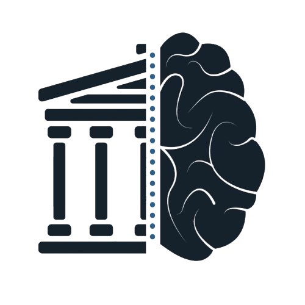

O Museu Vivo
da Saúde Mental
Uma jornada curatorial através da história, tecnologia e os Objetivos de Desenvolvimento Sustentável (ODS).
Começar a visita
A saúde mental é uma construção histórica, não apenas um diagnóstico médico
Nosso desafio é desmistificar a evolução do cuidado psiquiátrico. Este projeto integrador une criatividade, expressão corporal e tecnologia para provar que a saúde mental está intrinsecamente ligada à construção da sociedade e aos Objetivos de Desenvolvimento Sustentável (ODS) da ONU.
O roteiro acompanha a transição do isolamento à cidadania
Cada sala é uma estação imersiva. Clique para entrar. Os números coloridos são os ODS trabalhados em cada época.
Muros, grades e silêncio: o cuidado era sinônimo de afastar da sociedade quem fugia do padrão.
O avanço médico chega, mas com um dilema: até onde ir sem ferir a integridade do paciente?
Das paredes para as ruas: pacientes, famílias e profissionais passam a reivindicar direitos.
A luta vira lei: o direito ao cuidado passa a ser garantido pelo Estado.
No centro está o paciente, rodeado por família, comunidade, profissionais de saúde e elementos comunitários.
Hiperconexão, sobrecarga e desigualdade invisível: velhos direitos diante de novos desafios.
Um século de transformação no cuidado e nos direitos
| O Passado (1900-1960) | A Transição (1970-2001) | O Presente (CAPS/Atual) | |
|---|---|---|---|
| Paradigma de tratamento | Isolamento/Contenção | Reivindicação de direitos | Inserção comunitária/Prevenção |
| Localização do cuidado | Muros dos manicômios | As ruas/Movimento | O território (CAPS)/Ambiente digital |
| Status do paciente | Objeto socialmente indesejado | Sujeito político/Voz ativa | Cidadão de direitos e produtor de cultura |
O cuidado psicológico é uma questão intersecional que impacta toda a estrutura social
Saúde mental não se resume ao ODS 3. A forma como uma sociedade trata o sofrimento psíquico dita o seu progresso na Igualdade de Gênero (5), no Trabalho Decente (8), na Redução de Desigualdades (10) e na construção de Instituições Eficazes e Pacíficas (16).
Cuidar da mente é, fundamentalmente, construir direitos.
Nosso Museu Vivo provará que a evolução psiquiátrica é um espelho da nossa evolução humanitária. Ao integrar Artes, Educação Física e TI, vamos mostrar ao público que promover a saúde mental significa reduzir desigualdades, fortalecer comunidades e construir uma sociedade radicalmente mais justa.